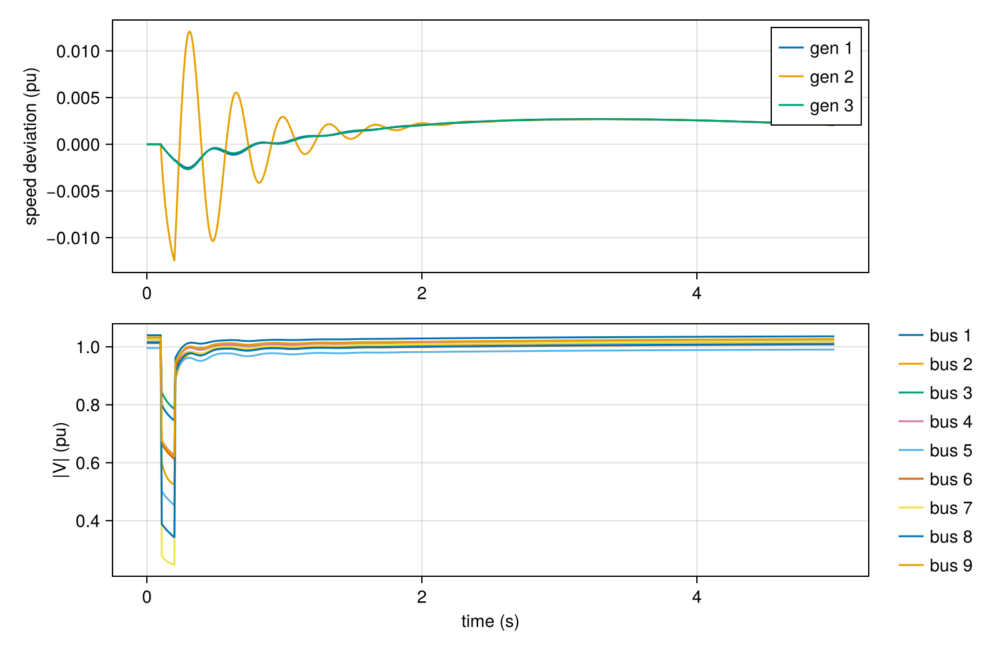

First simulation
Every GradPower study follows the same five steps:
.raw + .dyr ──► from_psse ──► build_network! ──► runpf! ──► DynamicProblem
initialize_dynamics!
│
add_event! (faults, trips, ...) ──────────────┤
▼
integrate! ──► (t, traj)We go through them on the WSCC 9-bus system: three GENROU machines, each with an IEESGO steam governor, and three loads.
1. Read the case
using GradPower, CairoMakie
ex = joinpath(pkgdir(GradPower), "examples")
sys = from_psse(joinpath(ex, "ieee9_v33.raw"), joinpath(ex, "ieee9bus_gov.dyr"))PowerSystem:
baseMVA: 100.0
Buses:
================================================================
i id type baseKV v0m v0a
----------------------------------------------------------------
1 'BUS1 ' 3 16.5 1.04 0.000e+00
2 'BUS2 ' 2 18.0 1.025 1.620e-01
3 'BUS3 ' 2 13.8 1.025 8.142e-02
4 'BUS4 ' 1 230.0 1.02579 -3.869e-02
5 'BUS5 ' 1 230.0 0.99563 -6.962e-02
6 'BUS6 ' 1 230.0 1.01265 -6.436e-02
7 'BUS7 ' 1 230.0 1.02577 6.492e-02
8 'BUS8 ' 1 230.0 1.01588 1.270e-02
9 'BUS9 ' 1 230.0 1.03235 3.433e-02
Gens:
===============================================================
bus id psch qsch mbase
---------------------------------------------------------------
1 1 7.164e-01 2.705e-01 260.0
2 1 1.630e+00 6.654e-02 310.0
3 1 8.500e-01 -1.086e-01 280.0
Loads:
===================================
bus id pd qd
-----------------------------------
5 1 1.25 -0.5
6 1 0.9 -0.3
8 1 1.0 -0.35
Branches:
=============================================================================================
fr to id r x sh tap shift
---------------------------------------------------------------------------------------------
4 5 '1 ' 0.01 0.085 0.176 0.0 0.0
4 6 '1 ' 0.017 0.092 0.158 0.0 0.0
5 7 '1 ' 0.032 0.161 0.306 0.0 0.0
6 9 '1 ' 0.039 0.17 0.358 0.0 0.0
7 8 '1 ' 0.0085 0.072 0.149 0.0 0.0
8 9 '1 ' 0.0119 0.1008 0.209 0.0 0.0
1 4 'T1' 0.0 0.0576 0.0 1.0 0.0
2 7 'T2' 0.0 0.0625 0.0 1.0 0.0
9 3 'T3' 0.0 0.0586 0.0 1.0 0.0
Shunts:
==============================
bus id gsh bsh
------------------------------
from_psse parses the network (buses, lines, transformers, generators, loads) and attaches a dynamic model to each device. Generators found in the .dyr get their machine and controller models. Loads become ZIP loads, constant impedance by default. Generators without a dynamic record become StaticGenerator stand-ins that hold their bus voltage.
2. Build the network and solve the power flow
build_network!(sys) # admittance matrix Y
runpf!(sys) # Newton power flow (with generator Q limits)
[(b.i, round(b.v0m, digits = 4), round(rad2deg(b.v0a), digits = 2)) for b in sys.buses]9-element Vector{Tuple{Int64, Float64, Float64}}:
(1, 1.04, 0.0)
(2, 1.025, 9.28)
(3, 1.025, 4.66)
(4, 1.0258, -2.22)
(5, 0.9956, -3.99)
(6, 1.0127, -3.69)
(7, 1.0258, 3.72)
(8, 1.0159, 0.73)
(9, 1.0324, 1.97)The table lists the PSS/E bus number, the voltage magnitude (pu) and the angle (degrees) of the operating point.
3. Initialize the dynamics
dp = DynamicProblem(sys)
initialize_dynamics!(dp, sys)
length(dp.zvec) # number of unknowns of the DAE66initialize_dynamics! computes every machine's internal state, every controller's setpoint and every load's admittance so that the system sits exactly at the power-flow equilibrium. A simulation without any event stays flat:
t, traj = integrate!(dp, sys, 2.0)
maximum(abs.(traj .- traj[:, 1])) # drift over 2 s3.261058978409892e-94. Schedule a fault
ContingencyEvent is a shunt fault at an (internal) bus index. sys.busmap converts PSS/E bus numbers to internal indices.
add_event!(sys, ContingencyEvent(sys.busmap[7], 0.02, 0.1, 0.2)) # r = 0.02 pu, 0.1 s → 0.2 s1-element Vector{ContingencyEvent}:
ContingencyEvent(7, false, 0.02, 0.1, 0.2, 0.0)5. Integrate
dp.zvec .= traj[:, 1] # restart from the equilibrium
t, traj = integrate!(dp, sys, 5.0) # dt = 1/120 s by default
size(traj)(66, 601)traj[:, j] is the full state at time t[j]. Plot the machine speeds and every bus voltage:
net = sys.dynamic.diff_dim + sys.dynamic.alg_dim # voltages come last
vm(b) = hypot.(traj[net + 2b - 1, :], traj[net + 2b, :])
fig = Figure(size = (800, 520))
ax1 = Axis(fig[1, 1], ylabel = "speed deviation (pu)")
for (k, i) in enumerate(GradPower.gen_speeds(sys))
lines!(ax1, t, traj[i, :], label = "gen $k")
end
axislegend(ax1)
ax2 = Axis(fig[2, 1], xlabel = "time (s)", ylabel = "|V| (pu)")
for b in eachindex(sys.buses)
lines!(ax2, t, vm(b), label = "bus $(sys.buses[b].i)")
end
fig[2, 2] = Legend(fig, ax2, framevisible = false)
fig
During the fault, voltages collapse near bus 7. The machines accelerate, swing against each other after the fault is cleared, and the governors bring the frequency back.
integrate! leaves sys as it found it: faults are switched off, tripped lines restored, parameters reset. To repeat a study, reset dp.zvec to the initial state (or call initialize_dynamics! again), and clear or replace the events in sys.dynamic.events.
Variations to try
integrate!(dp, sys, 5.0; dt = 1/240) # smaller step
integrate!(dp, sys, 5.0; integrator = :crank_nicolson) # 2nd-order method
integrate!(dp, sys, 5.0; solver = :schur) # Schur-reduced Newton
integrate!(dp, sys, 5.0; save_every = 4) # store every 4th stepEach option is explained in the guides.